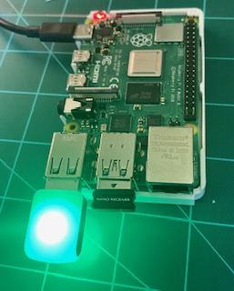

Programmatically controlling blink(1) USB LED devices is simple api of this package. Much of the API is asynchronous (i.e., returns Promise that you can await on) and fully documented. This module has been tested on Mac, Windows 10, and Ubuntu Linux on a Raspberry Pi 4.

If you perfer a JS callback style API consider node-blink1.
Ensure your blink(1) is fully functional using the blink(1) utilities.
npm install https://github.com/ros2jsguy/node-blink-async
Your device may need libusb installed:
sudo apt install libusb-1.0-0
See node-hid's instructions for compiling from source You may find the 51-blink1.rules file useful in your device configuration process.
import {Blink1Async, Blink1_LEDN, BlinkRate} from '../blink1-async';
async function example() {
// list all blink(1) devices
console.log('devices; ', Blink1Async.devices());
// output the version info of the default blink(1) device
let blink1: Blink1Async = new Blink1Async();
console.log("version: " , await blink1.version() );
console.log('set color: red', await blink1.setRGB(255));
console.log('read rgb: ', await blink1.rgb(Blink1_LEDN.LEDA));
await new Promise( (resolve) => {
setTimeout(resolve, 2000);
});
console.log('Blink green at VERY_FAST rate (100 ms) for 5 seconds');
await blink1.blink(0, 255, 0, BlinkRate.VERY_FAST, 5000);
console.log('Blink blue at SLOW rate (1000 ms) for 5 seconds');
await blink1.blink(0, 0, 255, BlinkRate.SLOW, 5000);
console.log('Show solid yellow for 5 seconds');
await blink1.blink(255, 255, 0, 10000, 5000);
// turn off the blink(1) output
await blink1.off();
// access the display pattern at line-1
console.log('Color pattern (line-1):', await blink1.readPatternLine(1));
// clear the memory of all display patterns.
console.log('Clearing pattern');
await blink1.clearPattern();
// confirm that display patterns are cleared
console.log('Color pattern (line-1):', await blink1.readPatternLine(1));
// close and release the blink(1) device
await blink1.close();
console.log('completed');
}
I develop mostly in TypeScript and prefer using modern JS features when I have the option. Working directly with the node-blink1 package which has been around for awhile, felt too retro for my liking, e.g., no jsdoc, callback-based api... I mean no disrespect to the node-blink1 author(s) who's priority for backward compatibility supercedes breaking the package just to use a new wizbang language feature. While developing a robot using TypeScript on a Raspi4 I wanted to integrate an old Blink1 led from my kit into the design. That led me to creating this package that makes it easier to to asynchronously control a Blink1 LED from TypeScript.
This package uses the node-blink1 package to perform the low level control of Blink1 devices
Generated using TypeDoc